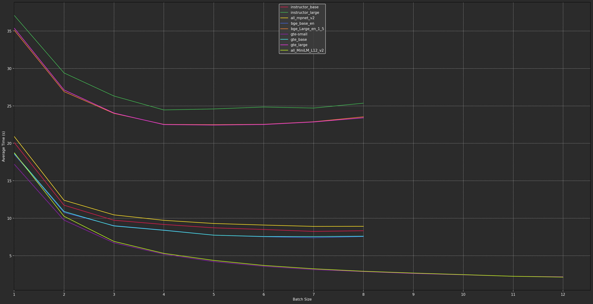

Overview
This program extracts text from a variety of file formats, splits the text, and then converts the chunks vectors in order to be put into a vector database to be searable. This is commonly referred to as "RAG" or "Retrieval Augmented Generaton." Your query is then used to pull relevant chunks from the vector database and your query along with the contexts are sent to the LLM for an answer.
Choosing the Correct Model
Early versions of this program used a wide variety of vector models. However, most of the models are now powerful enough to be good at a variety of tasks. Therefore, this program now uses two kinds of models.
First, models beginning with sentence-t5 are specifically trained to sentences that are as similar
the one in your query. They should not be used for general information retrieval or question answering.
For example, if your query is...
Quote for me all sentences that discuss the main character in this book eating food.
or...
Provide me all sentences verbatim of a court discussing the elements of a defamation claim.
...you would receive multiple sentences that mimic your query.
All other models fall within the second category, which can be characterized as "generalist" models. They excel at returning contexts that answer your question and should only be used for that purpose.
Vector Model Characteristics
Max sequence
Refers to the maximum number of tokens (not characters) that a given model can process at a time.
This is different than the Chunk Size setting within the Settings tab, which is in characters.
"Dimensions"
Refers to how complex the number is that the vector model creates to represent the meaning of a chunk of text. A higher number means more nuance, which improves search results, while a lower number means less processing time.
Size
Refers to the size on disk.
Tips
Always use the highest quality vector model that your system specs and time allow. Most of the models will fit
comfortably within your amount of VRAM because I have specifically overridden the default batch_size parameter
within the sentence-transformers library of 32. It is now optimized for each particular vector model based on my
extensive testing. As seen below, using a batch_size of 32 actually decreases performance and unnecessarily increases VRAM usage.

If you must modify them, they can be altered within the database_interactions.py script.